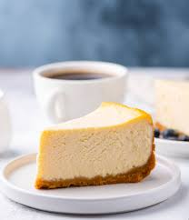

Recipes
Cheesecake

Steps and Ingredients
This is a recipe for your typical cheesecake. Simple to do and tasty to eat!
Below are the ingredients needed for this recipe and their measurements
- 200g digestive biscuits (or graham crackers)
- 100g melted butter
- 400g cream cheese
-
- 100g sugar
- 200ml heavy cream
- 1 tsp vanilla extract
Below are the steps, be sure to follow along carefully and also to read the recipe fully once before actually starting
- Make the base
- Crush the biscuits until fine
- Mix with melted butter
- Press into a pan to form the base
- Chill in fridge for 20-30 minutes
- Make the filling
- Beat cream cheese and sugar until smooth
- Add vanilla and mix
- Pour in heavy cream and mix until thick
- Assemble the cake
- Pour filling onto the chilled base
- Smooth the top
- Chill the cake
- Refrigerate for at least 4 hours (overnight is better)
- Serve
- Add toppings if you want to, enjoy!
Scrambled Eggs

Steps and Ingredients
This is a recipe for your typical scrambled eggs. Simple to do and tasty to eat!
Below are the ingredients needed for this recipe and their measurements
- 2 eggs
- 1 tbsp butter
- Salt & pepper
Below are the steps, be sure to follow along carefully and also to read the recipe fully once before actually starting
- Steps
- Crack eggs into bowl and whisk
- Melt butter into pan on low heat
- Pour eggs in and stir gently
- Cook until soft and fluffy
- Season
- Serve
Home